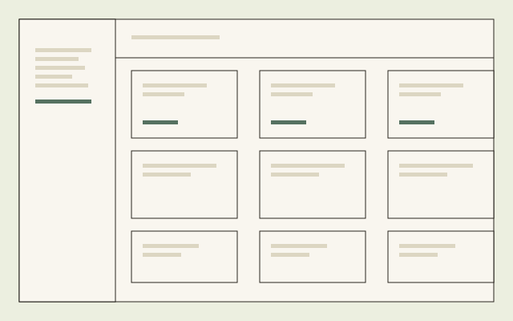
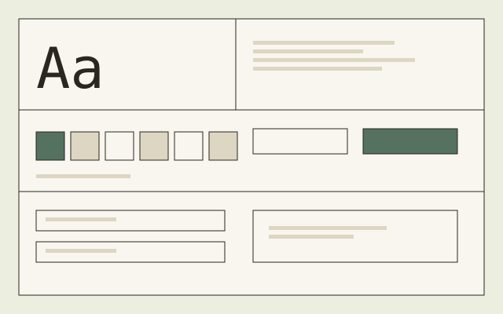

01

Centrus
One platform for faster translational safety assessments.
Browse
Projects
Four projects for Instem, from safety assessment platforms to the design system behind them.
04
01

One platform for faster translational safety assessments.
02

Pre-clinical study data, made visual.
03

An expert service, turned into a product.
04

The Figma library behind Instem’s design system.
Get in touch